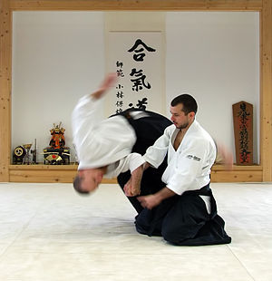

Aikido
Aikido (合気道 Aikidō?) is a Japanese martial art developed by Morihei Ueshiba as a synthesis of his martial studies, philosophy, and religious beliefs. Aikido is often translated as "the Way of unifying (with) life energy"[1] or as "the Way of harmonious spirit." Ueshiba's goal was to create an art that practitioners could use to defend themselves while also protecting their attacker from injury. Aikido is performed by blending with the motion of the attacker and redirecting the force of the attack rather than opposing it head-on. This requires very little physical strength, as the aikidōka (aikido practitioner) "leads" the attacker's momentum using entering and turning movements. The techniques are completed with various throws or joint locks.[5]

Early History of Aikido
Aikido was created by Morihei Ueshiba (植芝 盛平 Ueshiba Morihei, 14 December 1883 – 26 April 1969), referred to by some aikido practitioners as Ōsensei ("Great Teacher").[8] Ueshiba envisioned aikido not only as the synthesis of his martial training, but as an expression of his personal philosophy of universal peace and reconciliation. During Ueshiba's lifetime and continuing today, aikido has evolved from the Aiki that Ueshiba studied into a wide variety of expressions by martial artists throughout the world.
Aikido in the present and Future
Aikido was first brought to the rest of the world in 1951 by Minoru Mochizuki with a visit to France where he introduced aikido techniques to judo students.[14] He was followed by Tadashi Abe in 1952 who came as the official Aikikai Hombu representative, remaining in France for seven years. Kenji Tomiki toured with a delegation of various martial arts through 15 continental states of the United States in 1953.[13] Later in that year, Koichi Tohei was sent by Aikikai Hombu to Hawaii, for a full year, where he set up several dojo. This was followed up by several further visits and is considered the formal introduction of aikido to the United States. The United Kingdom followed in 1955; Italy in 1964; and Germany 1965. Designated "Official Delegate for Europe and Africa" by Morihei Ueshiba, Masamichi Noro arrived in France in September 1961. Seiichi Sugano was appointed to introduce aikido to Australia in 1965. Today there are aikido dojo available throughout the world. Aikido was exhibited in Hollywood films by Steven Seagal in the 1990s.
Visit this link:Wikpedia Reference for Aikidofor more reference material.